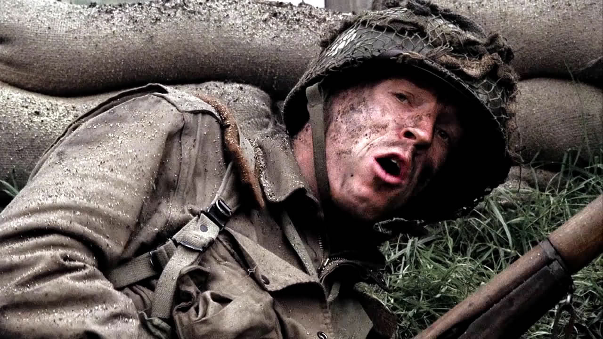
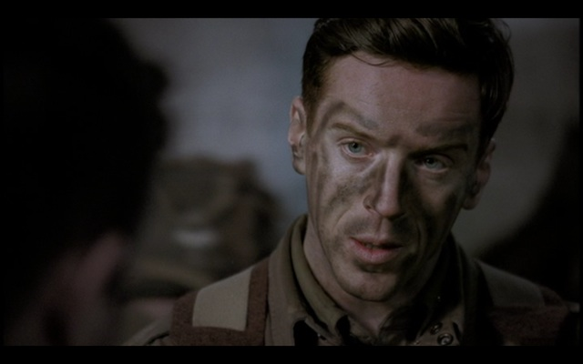
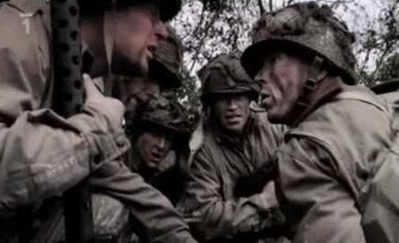
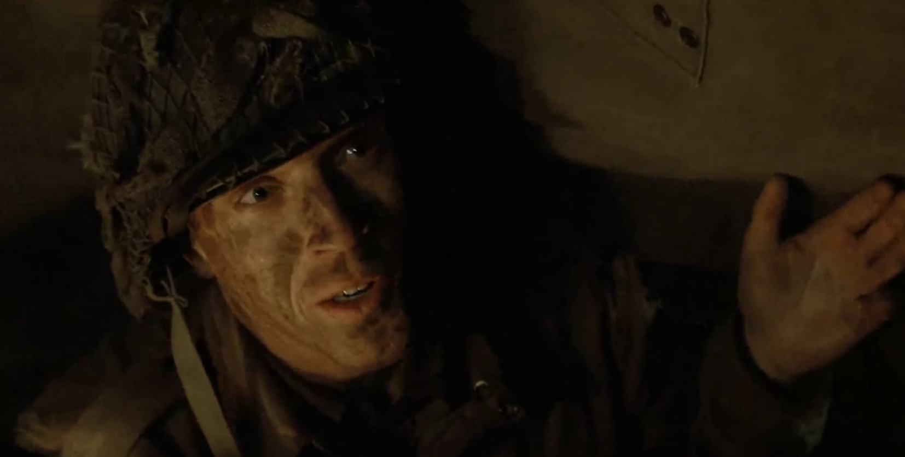

01
诺曼底上空 · 凌晨绿灯亮了，计划却已经散开
诺曼底上空 · 凌晨
剧情示意图剧情事实飞机遭到防空火力袭击，空降发生在混乱中。温特斯落地后发现装着主要装备的腿袋已经丢失，熟悉的队形也不复存在；E 连大量人员未能按计划集中。[1]
这一场为什么重要 · 个人解读
开场把上一集整齐的训练画面拆成一个个孤立的人。准备并不能让战争按预案发生，却能让人仍然完成挂钩、检查、跳出舱门这些动作。训练的意义此刻藏在动作里，几乎没有时间供人宣告勇敢。

决战之日 · 法国诺曼底 · 1944 年 6 月 6 日，凌晨至夜晚
上一集结束时，E 连仍是一支准备出征的部队；这一集打开舱门，原有的秩序便被黑夜、防空炮火和散落的降落伞打碎。温特斯先要找到人、辨清方向，再带着能够集合的士兵袭击布雷库尔庄园附近的炮阵地。本页沿着“失散—重新协同—承担损失”阅读这一天：训练如何化成动作，信任如何在命令之间生长，一次成功行动又为什么无法让指挥官轻松庆祝。范围止于本集结尾；军事行动的电视剧呈现与历史考证分别说明。[1]
本页范围回顾本集与必要的前集背景；以下主题分析针对剧集呈现，历史补充另作说明。
8 个关键场景，连起本集的因果与变化。
按剧中叙事顺序排列。批注默认展开，可直接阅读场景的意义。
诺曼底上空 · 凌晨
剧情示意图剧情事实飞机遭到防空火力袭击，空降发生在混乱中。温特斯落地后发现装着主要装备的腿袋已经丢失，熟悉的队形也不复存在；E 连大量人员未能按计划集中。[1]
开场把上一集整齐的训练画面拆成一个个孤立的人。准备并不能让战争按预案发生，却能让人仍然完成挂钩、检查、跳出舱门这些动作。训练的意义此刻藏在动作里，几乎没有时间供人宣告勇敢。
诺曼底田野 · 夜间
剧情示意图剧情事实温特斯与 A 连无线电兵霍尔相遇，纠正口令后带他前进。霍尔担心丢失电台会被追责，温特斯让他先关注眼前任务；随后汇合利普顿等人，借地图与地标确定方向。[2]
他没有要求霍尔立刻变得无所畏惧，而是给出能够完成的小任务。帮助寻找地标，让霍尔从等待训斥的人变成提供信息的人。这种照顾同时具有战术价值：稳定一个人，也就多出一个可以协作的伙伴。
乡间道路 · 黎明前
剧情示意图剧情事实队伍遇到德军，瓜奈尔未等命令就开火，温特斯随后责令他服从。瓜奈尔仍对温特斯抱有偏见；他在出发前得知兄长阵亡，这份悲痛继续影响着他的情绪。[2]
瓜奈尔想尽快杀伤敌人，温特斯要让所有人一起行动。这里的冲突把私人伤痛放进公共责任之中：一个人认为已经够安全的开火时机，可能让整支小队暴露。克制也因此成为一种能够保护战友的能力。
美军集合地附近 · 清晨
剧情示意图剧情事实马拉其与一名来自俄勒冈的德军战俘聊起共同的生活背景。离开后，他看见斯皮尔斯走向俘虏，又听到枪声；镜头转向他的反应，没有展示完整事件经过。[6]
熟悉的地名短暂地把敌人变回普通人，随后的声音又打断了这个联系。观众和马拉其都只能拼接不完整信息。这段不安应被保留下来：作品的暗示、角色的判断与经过核证的历史，是三种不同的东西。

温特斯在集合地点接令 · 第 2 集画面。剧情事实米汉仍未与连队取得联系，温特斯代为承担指挥责任。上级要求 E 连摧毁威胁登陆部队的炮阵地；他盘点已经集合的人，说明掩护、突击和炸毁火炮的分工。[1]
第一集里的信任问题，此刻变成一项需要执行的任务。温特斯没有等全部人员归队才开始，也没有装作已经知道一切。他让有限的人力拥有明确职责，使“可用的部队”先于“完整的编制”在现场出现。

温特斯与士兵交流的本集画面；用于说明现场协同，不标成某一句命令的准确镜头。剧情事实机枪提供掩护，突击队进入相连的战壕，逐门夺取并破坏火炮。康普顿、瓜奈尔与马拉其参与推进；炸药运送受阻时，霍尔带来补给。马拉其还冒险离开掩护寻找战利品。[4]
空间关系比枪声更能解释这场行动：先压住敌人的观察与射击，再移动，再巩固一个局部位置。战壕连接着德军阵地，也成为美军推进的通道。马拉其的冒险则提醒我们，训练过的人仍可能瞬间偏离共同目标。
剧情事实霍尔在行动中阵亡。斯皮尔斯带 D 连人员接手最后一门炮的攻击，温特斯组织撤出。返回后他报告火炮实际上是 105 毫米，并带回在阵地发现的地图。[3]
撤退与进攻一样需要组织，否则完成任务的人仍会在最后一段路上暴露。地图让战果超出眼前阵地，但镜头也让霍尔从短暂认识的人变成温特斯记住的损失。有效指挥和无法挽回的死亡，同时成立。

夜间温特斯与休息中的士兵交谈 · 本集画面。剧情事实温特斯来到士兵休息处，喝了一口酒，与瓜奈尔的距离有所缩短。随后尼克森谈到地图的价值，温特斯却想起霍尔，失去食欲；独处时，他祈愿能活下来并过平静的生活。[5]
本集用两个小动作收束整日战斗：在战友面前喝酒，在朋友面前吃不下东西。前者让指挥官进入共同经历，后者让胜利离开抽象的统计。结尾的愿望也把“成功”拉回一个人的尺度——能够重新拥有普通生活。
切换阶段，点人物或关系，阅读具体证据。
空降打破队形，口令、地标与个人安抚重新接起协作。
用具体场景对照本集的两种处境。
找到方向、集合现有人手、说明分工、争取掩护，让每个人知道下一步做什么。
地图有战略价值，霍尔却不能被折算成这张地图的代价；温特斯只能同时承受成功与死亡。
方向、人员、火力和炸药等眼前问题。
↔一次行动的意义，以及一个年轻人的缺席。
简洁指令与分工，把注意力拉回可执行的步骤。
↔对朋友说出霍尔的名字，让悲痛得到表达。
不断移动、观察和重新部署，几乎没有停顿。
↔酒、食物与独处，让整日累积的感受浮出。
个人解读：本集让能力与代价出现在同一张人物画像里。温特斯能让队伍继续行动，也仍会被损失击中；他的镇定因此有重量，而不是一种没有痛觉的姿态。
短句原文、中文自译，以及它在这一刻的分量。
“We're not lost, private. We're in Normandy.”我们没迷路，列兵。我们在诺曼底。
霍尔担心他们与其他人一样迷失；温特斯随后继续寻找地标。配图为本集白天近景，非这句台词的对应镜头。中文为自译。
这句话把失控的感觉放进仍然成立的事实中：他们已经抵达任务所在的地方。它没有提供精确坐标，却先让人从慌乱中回来，开始处理能够查明的事情。[7]
英文短句核对来源列在篇末；中文为本页自译。配图的场景与出处随卡片标注。
只沿本集与此前的线索回看，不揭示后续情节。
剧情事实夜间相遇时，温特斯纠正霍尔的口令，并用共同识别方式与散落的士兵联系。[2]
个人解读个人解读：上一集的训练成果以小而具体的动作回到现场。在看不清脸的黑夜里，共同学过的东西暂时成为辨认彼此的桥。
剧情事实落地后的装备缺失迫使人们重新寻找武器；炮阵地推进又依赖掩护和炸药到位。[1]
个人解读个人解读：失去装备不意味着任务取消，但“继续行动”也需要补给，不能只靠意志。炸药迟到使我们看见英勇场面背后的依赖关系：有人推进，也得有人把必需品带到。
剧情事实温特斯带回地图，尼克森向上呈报；当晚温特斯仍先谈起霍尔。[5]
个人解读个人解读：地图把战争化为位置与目标，名字把战争还给某一个人。两者并排出现，阻止我们只用漂亮的战果去理解这一集，也让温特斯的领导责任延伸到枪声停止之后。
到本集结尾，温特斯已得到战友更具体的信任，E 连也完成了眼前任务。可他没有把这一天称作轻松的胜利：霍尔的名字留下来，远处的战争仍在继续。个人解读：他祈求的平静土地，是本集最朴素的目标——希望有一天能停止把每件事都变成生死问题。
回到档案首页 ↑